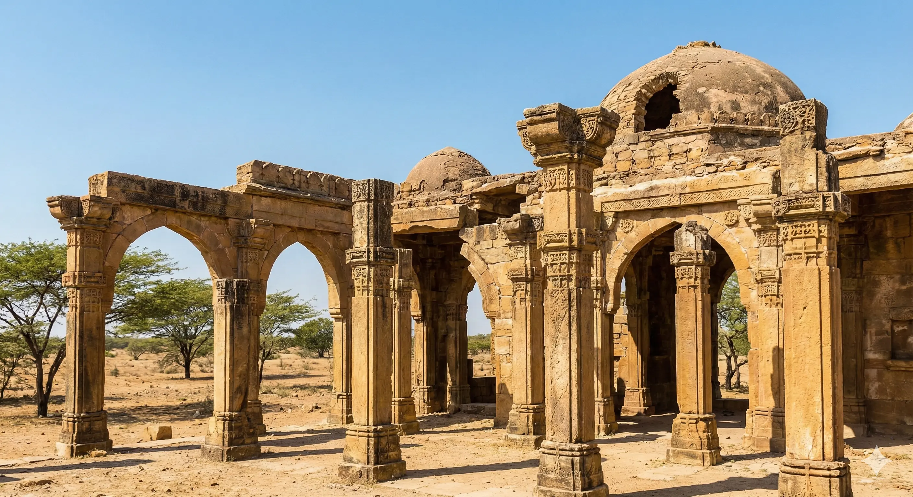
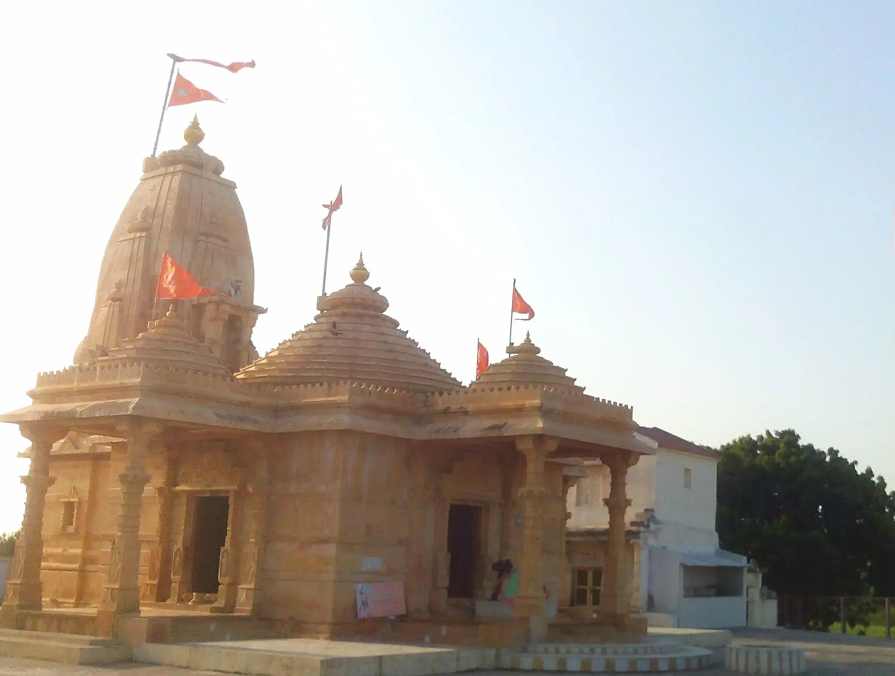
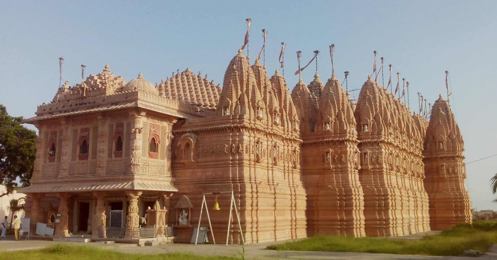

Bhadreshwar, anciently known as Bhadravati, is a site of immense historical and spiritual significance. Home to the Vasai Jain Tirth, one of the oldest Jain temples in India, its origins are believed to date back to 516 BCE. The temple complex, a masterpiece of Sekhari architecture, has withstood the test of time and nature, having been renovated numerous times—most notably by the philanthropist Jagdusha in the 13th century and completely rebuilt after the devastating 2001 earthquake. It stands today as a shining beacon of resilience and faith in white marble.
Who Should Visit
- Spiritual Seekers: A major pilgrimage site for Jains, offering deep serenity.
- History Buffs: Explore a site with layers of history from 516 BCE to the 12th century.
- Architecture Enthusiasts: Witness the fusion of Sekhari temple styles and early Islamic architecture.
How to Reach
- Spiritual Seekers: A major pilgrimage site for Jains, offering deep serenity.
- History Buffs: Explore a site with layers of history from 516 BCE to the 12th century.
- Architecture Enthusiasts: Witness the fusion of Sekhari temple styles and early Islamic architecture.
Landmarks & Heritage
The defining monuments

Vasai Jain Temple
The main attraction, built in white marble. It features a central shrine with beautiful idols of Ajitnatha, Parshvanatha, and Santinatha, surrounded by 52 smaller shrines (dev-kulikas).

Ancient Mosques
The Duda Masjid and Lal Shahbaz Dargah (Solah Khambhi) are dated to the late 12th century, making them some of the earliest mosques in India, showcasing unique Islamic-Indian fusion architecture.

Chokhanda Mahadev & Pandavas Kund
An ancient Shiva temple situated on the seashore, and a large square stepwell (`Pandavas Kund`) believed to be built by the Pandavas 5000 years ago.
Curated Local Advice
Temple Stay
Night stays within the Jain temple complex (`Dharamshala`) are strictly for Jains only. Others can find simple lodging in the Bhadreshwar town.
Shopping & Bazaars
- Religious Souvenirs: Small shops near the temple sell idols, rosaries, and religious books.
- Local Crafts: For broader shopping, head to nearby Mundra or Mandvi.
Local Eats
- Temple Bhojanalaya: Simple, sattvic meals are available for pilgrims at the temple dining hall.
- Local Snacks: Small stalls in town offer tea and basic Gujarati snacks like Gathiya.
When to Visit
November to February is the ideal time to visit due to the pleasant weather. Early morning visits offer a peaceful spiritual experience.
Nearby Places to Visit
Suggested Itinerary
Location & Gallery

